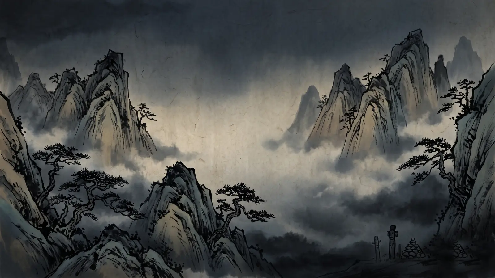
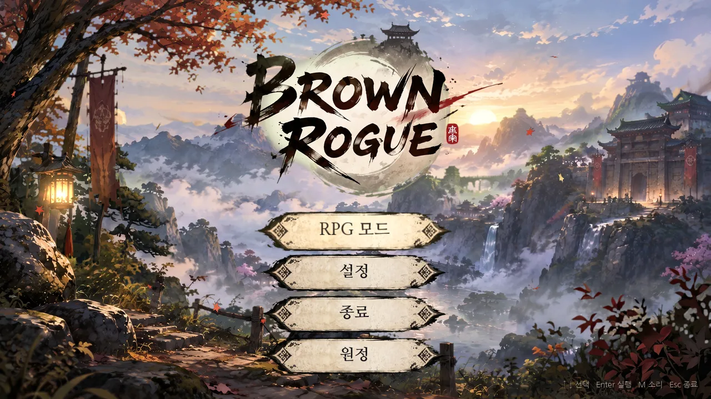

만들고 있는 게임, 학교 공부 정리, 팀 프로젝트를 한곳에 모았습니다. 위 분류를 눌러 바로 갈 수 있어요.
혼자 만들고 있는 게임의 기획 도록

부서진 저승길 위에서 구미호 아이가 오행 술법으로 원귀를 풀어 주는 쿼터뷰 액션 로그라이트. 이야기, 한 판의 흐름, 전투, 원귀, 술법·보물, 신당까지 열두 거리로 정리했습니다.

한·중·일의 영웅 열다섯 중 다섯을 골라 3×4 진형에 세우고, 라운드 사이마다 자리를 옮기며 찢긴 저승 명부를 돌려주러 가는 동양풍 배치 턴제 RPG. 영웅, 전투, 열 장의 보스, 성장, 원정 모드까지 열한 절로 정리했습니다.
숭실대 AI소프트웨어학부 1학년 2학기 복습 노트
두 과목의 강의 정리, 퀴즈, 오답노트를 모은 첫 화면
AI 이해와 역사 · 지능형 에이전트 · 탐색 · 제약 충족 문제(1~5장)
자료형·연산자·조건문·반복문·함수·재귀(2~9장)
C언어 2~9장을 움직이는 그림으로 설명하는 영상
탐색으로 문제 풀기
제약 충족 문제
재귀 호출이 쌓이고 풀리는 과정을 한 단계씩 따라가기
팀으로 만드는 것들
아두이노로 만드는 FFB 레이싱 휠. 팀 발표 자료와 3D 시뮬레이션
부품 배치와 작동 방식을 돌려 보며 확인하는 3D 모델
팀 SRS 문서 위에 고칠 곳을 빨간 펜으로 표시하고, 빠진 요구사항 초안을 붙였습니다
프밍기2 팀 프로젝트의 C 서버 파트. 패킷 형식, poll 루프, 2인 잠금 중계, 공격 시연 옵션, 단계별 확인 방법